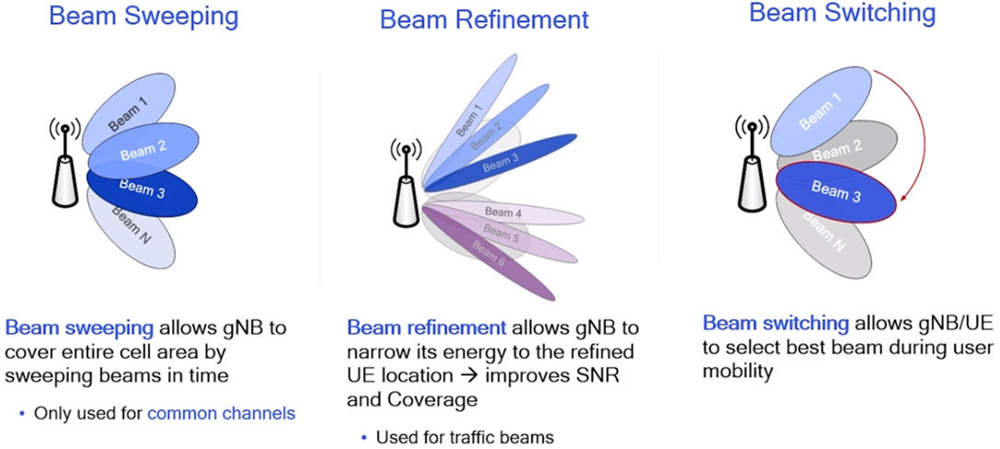
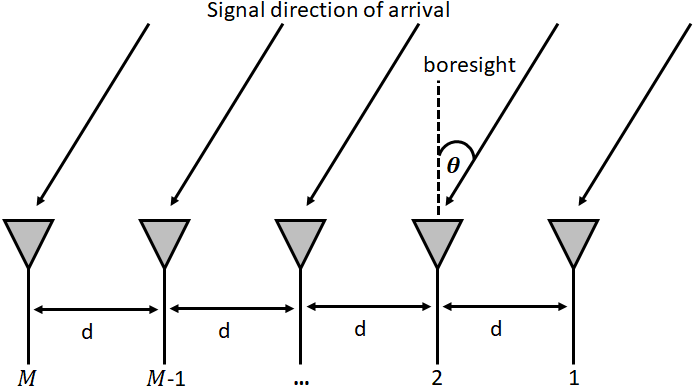
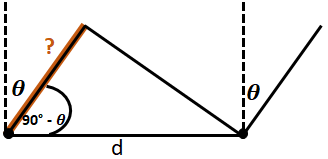

Antenna Array Beamforming Demystification
Array-element Signal Formulation
Antenna array signal processing is an actively developing research area in communication technologies and
connected to the progress in optimization theory, and remains the key technological development that
attracts more than one.
Beamforming is a signal processing operation that uses antenna arrays to create a spatial filter. Beamforming
consists to filter out signals from all directions except the desired direction(s). Beamforming can be used
to increase SINR (signal-to-interference-plus-noise ratio) of desired signals, null out interferers, shape
beam patterns, or even transmit/receive multiple data streams at the same time and frequency (5G & 6G).
|  |
|---|
Antenna arrays have a huge role in radar, where the goal is to detect and track targets.
This module introduces the theory in narrowband array signal processing beamforming and direction of arrival estimation algorithms and the basic principle of array signal processing techniques to further understand its implementation process and applications.
Assumptions of the signal mathematical model used in beamforming and DOA estimation algorithms:
- Each array element is an ideal omnidirectional point source, and the inter-element spacing is less than or equal to half-a-wavelength
- Signal sources are assumed to be in the far-field so that the signals impinging on the array can be regarded as a plane wave
- Let us consider a uniform linear array (ULA) topology. Spacing between array elements are equal, e.g. evenly spaced array
- The noise is zero-mean Gaussian white noise, and uncorrelated with the signal source
- The effect of mutual coupling between array elements is assumed to be negligible, i.e., the different element receives the same signal amplitude.
|  |
|---|
In Fig. 2, a signal is coming in from the right side (pure assumption). It is hitting the right-most element first. Consider the signal received by the first array element as a reference signal, then the analytical expression for the i−th signal received with respect to the reference array element is
\( s_i (t) = m_i (t) e^{j2\pi f_c t}, i = 0, ..., P-1\)
where \(m_i (t)\) is the complex envelope of the \( i-th\) modulated signal, and \( f_c\) the carrier frequency.
The signal received by each array element has a certain delay relative to the origin of the coordinates. The delay between when the signal hits that first element and when it reaches the next element can be calculated by forming the trigonometry problem formulated from Fig.2.
|  |
|---|
\( cos(90 - \theta) = \frac{adjacent}{hypotenuse} = \frac{adjacent}{d}\)
\( adjacent = d * cos(90 - \theta) = d * sin(\theta)\) Remember: cos(a - b) = cos(a)cos(b) + sin(a)sin(b)
The adjacent is just a distance. Convert the adjacent-distance to a time is necessary by using the speed of light: \( time_{elapsed} = d \sin(\theta) / c \). This equation applies between any adjacent elements of the array.
The propagation delay of the received signal from reference array element to the \( m−th \) array element can be expressed as
\( \tau_m (\theta_i) = \frac{d}{c} (m-1) sin(\theta_i),\) \( m=1, ..., M \)
MORE TO COME SOON